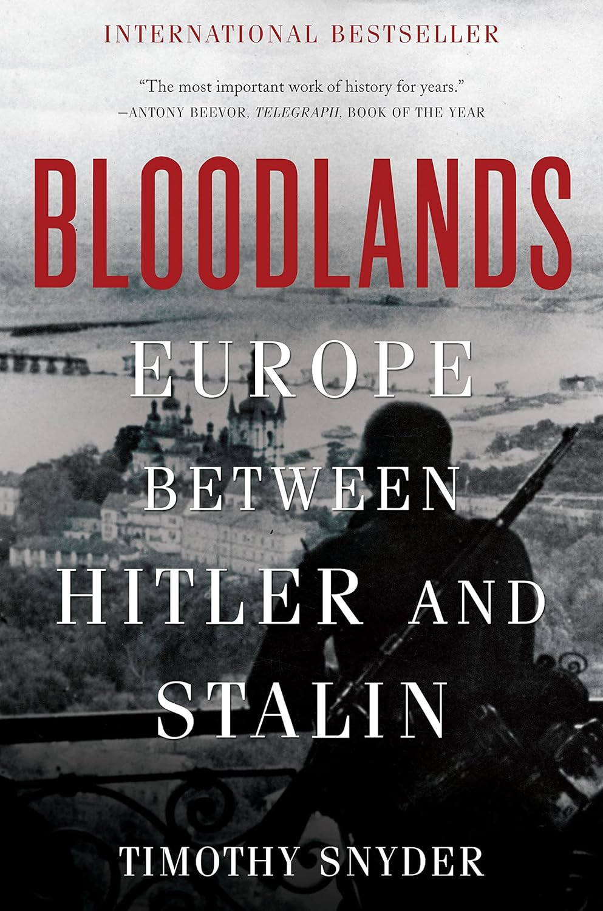

"Bloodlands: Europe Between Hitler and Stalin"
- Read on 2025-05-06
- Rating: ️️️️️
- Format: 🎧 (19 hours 14 minutes)
This book makes partial use of newer declassified documents of the politburo and Russia in general. The book exhaustively details the mass killings (a term he prefers over "genocide", due to some semantic disagreements over that word) by both Germany and Russia before, during, and even after World War II in the various contested areas in, between, and near Germany and Russia. Germany's actions were more familiar, but Russia's actions seemed to be no less appalling. The book is not for the faint of heart - and even for World War II enthusiasts I'm not sure I could encourage the reading of it. The author makes so many people (and peoples) come alive in the stories of their deaths. I admittedly got lost at multiple points, but his more personal stories would bring me back. It's just so hard to grasp how awful we as humans can be to each other.
While I sure hope such behaviors are never repeated, I know some already have been, and fear they will be again. The author discusses the comparative morality of what countries and people have done, but points out that, "It is not at all obvious that reducing history to morality plays, makes anyone moral."
Lastly, the focus of the book is not on slavery in the United States. Despite that, the fact that it was studied (and admired) by the leader of Germany forces a comparison. Towards the end of the book, the author shares this:
"As always, the point of 'You can't compare' is to halt inquiry and thought. We need both the Holocaust and slavery in history. A better and wiser country will think through the connections. One that protects emotions with taboos and memory laws is heading towards tyranny. We don't need memory laws. We do need history so that individuals can draw lessons for themselves. Indeed we need history to become individuals. Taboos make tribes and ignorance makes mobs. Only history individuates by providing the common subject from which individual ethical reasoning can begin."
Heavy topics.